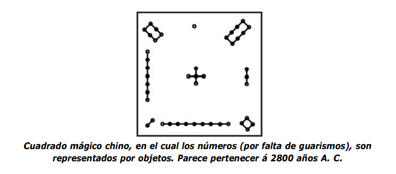
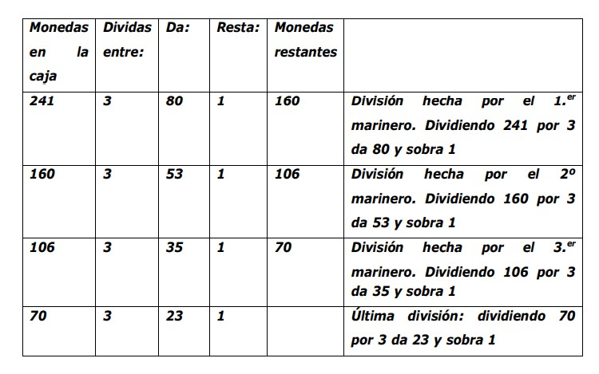

En un aposento abandonado Beremis y su amigo encontraron un extraño cuadro colgado que tenia garbatos inscritos en el, De inmediato Beremiz se dio cuenta que se trataba de de un cuadrado magico y procedio a explicar a su amigo de que se trataba. Un cuadrada magico es aquel que sumando sus filas, columnas y diagonales dan el mismo numero, mucha gente tiene la creencia que estos cuadrados dan suerte o tambien hay otros que son considerados diabolicos.
Acontinuacion tenemos un script que reconoce si tu cuadrado es magico sumando filas columnas y diagonales.
En una charla entre el Cluzir-Schá y el calculador Beremis surge la historia de los 3 principes en la cual hay un problema que tenia atribulados a muchos algebristas: Hubo una vez un barco navio que alcanzado por un violento temporal y fue salvado por 3 marineros y como recompensa se les dio un cofre con cierto numero de monedas mas de 200 y menos de 300 que debian ser divididos en 3 partes iguales para los 3 marineros. Durante la noche uno de los marineros queriendo asegurarse fuea sacar la parte que le correpondia pero al contar las monedas vio que no era divisible entre 3 ya que sobraba 1 moneda, el para no causar disputas la lanzo al mar y tomo su parte y guardo el resto, mas tarde el 2do marinero pense lo mismo que el primero y quizo asegurar su parte pero al dividir las monedas del cofre vio que la division entre los 3 no era exacta por 1 moneda, agarro la moneda restante y la lanzo al mar, tomo su parte y guardo el resto. Horas despues el 3er marinero tuvo la misma idea y nuevamente tuvo el mismo problema y lo resolvio de igual manera que sus compañeros tomo su parte y guardo el resto. Al dia siguiente el almojarife quizo repartir el cofre y tuvo nuevamente el mismo problema la cantidad no era divisible entre 3 al sobrar una moneda se lo quedo como pago yfue a entregar el resto entre los 3 marineros. ¿cuántas eran las monedas? ¿Cuánto recibió cada marinero?
Sabemos que:
por tanto se realizaron 4 divisiones del botin
Con un Script averiguamos cual es el numero de monedas inicial
Sabiendo el botin inicial podemos efectuar las divisiones:
